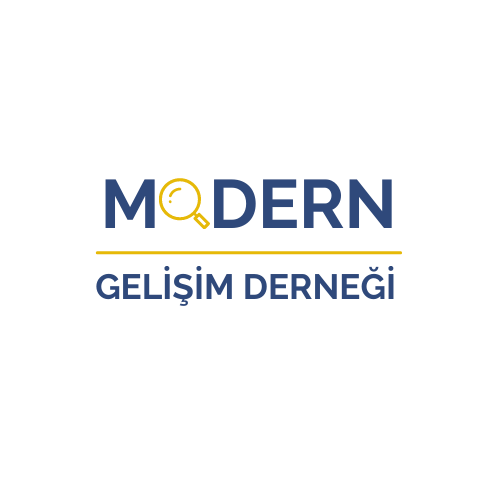

Deep ecology
Every living being has value in itself, whether or not it is useful to people.
Arne NæssErasmus+ · Adult education · Germany, Türkiye, Portugal
GreenMind brings philosophy into climate education. We help adult educators ask the questions behind sustainability, and we build open tools to explore them.
The idea
Many adult educators teach the facts of climate change but have few resources for the ethics behind them. GreenMind brings green philosophy into adult learning, so people can think critically about nature, consumption and responsibility.
Every living being has value in itself, whether or not it is useful to people.
Arne NæssThe way societies dominate nature mirrors the way they dominate people. An ethics of care answers both.
Care before controlEnvironmental problems grow out of social ones. Fairer communities make a healthier planet.
Climate justiceLive in agreement with nature and look for happiness in wisdom, not consumption.
Wanting lessThe journey
Each meeting hands the next one a piece of work. Between them, partners build the tools online.
Bonn, Germany. Partners compared adult education in their countries and planned the toolkit.
Funchal, Madeira. Four days on philosophy for adults, environmental ethics and Stoicism.
Eskişehir, Türkiye. Climate justice, the rights of nature, and the first TABU cards.
Bonn, Germany. Minimalism, wisdom over consumption, and the Green Future Declaration.
The toolkit
Early versions of the project’s learning tools. Use them in a session, or try them on your own.
How thinkers have seen nature, from “everything is water” to “nature has rights”.
Scroll sideways to move through 2,600 years.
Pick a month. Each environmental day comes with a question to discuss.
Every level feeds the one above it. Switch on a human pressure and watch it travel through the pyramid. This is a simplified teaching model, not a simulation.
Three dilemmas place you on the five views of environmental ethics. The scale tips between people and nature as you answer.
Explain the word without the forbidden ones. Sample cards; the full deck is being written at the Eskişehir workshop.
Teams of 3–5. One player describes the word at the top. Their team has one minute to guess it.
Forbidden words. If the describer says one of the five words below it, the card is lost.
Then discuss. After each round, ask what made the concept hard to explain. The debate is the point.
Results
Every result will be free to download and reuse here, on EPALE and on the Erasmus+ Project Results Platform.
A visual timeline of how thinkers from Thales to Næss saw nature.
In progressGlobal environmental days, each paired with a discussion question.
In progressAn interactive tool that shows how human actions ripple through species.
In progressA digital booklet with case studies for adult classrooms.
In progressA word game on philosophy and environmental ethics.
Cards drafted November 2026Creative philosophical ideas for a green future, signed at the final meeting.
April 2027Partners

Critical thinking, environmental advocacy and social inclusion through non-formal learning.

Non-formal education, leadership and sustainability projects. Leads dissemination and the TABU game.

Inclusion and sustainability education with an island perspective. Leads visual identity and evaluation.
News
Twelve educators from three countries meet to explore climate justice and write the first TABU cards.
Educators in Funchal designed lesson plans that link Stoic thought with low-consumption living.
Partners agreed the work plan and the six tools the project will publish.